Rezervace míst na představení v kostele – od výběru židle přes platbu až po vstup. Stručně, bez
technických podrobností.
V pěti krocích
VýběrNávštěvník vybere představení a na plánku kostela naklikne místa (300 Kč, nejvýše 20 najednou).
RezervaceVyplní jméno a e-mail. Místa jsou od té chvíle držena jen pro něj.
PlatbaZaplatí převodem – nejsnáz QR platbou v bankovní aplikaci. Má na to 3 dny (nejpozději do začátku představení).
VstupenkaÚčetní platbu potvrdí a návštěvníkovi přijde e-mailem vstupenka s QR kódem.
VstupU vchodu ji ukáže v mobilu, pořadatel ji načte telefonem a pustí ho dál.
Kdo s aplikací pracuje
Návštěvník
webová stránka · mobil i počítač
vybere představení a místa, rezervuje a zaplatí
dostane vstupenku e-mailem
může zrušit celou rezervaci nebo jen některá místa
Účetní / správce
správa · počítač
kontroluje platby ve výpisu a zapisuje, kolik skutečně přišlo
vrací peníze při zrušení
zakládá představení, storno podmínky a VIP hosty s konkrétními místy
posílá pozvánky pořadatelům u vchodu
Pořadatel u vchodu
scanner · vlastní mobil s pozvánkou
načítá vstupenky kamerou telefonu
vpouští VIP hosty podle jména
vidí jen představení, na která dostal pozvánku
Systém
automaticky
posílá e-maily a připomínky platby
ruší nezaplacené rezervace a uvolňuje místa
po akci maže osobní údaje
Obrazovky
Návštěvník
mobil
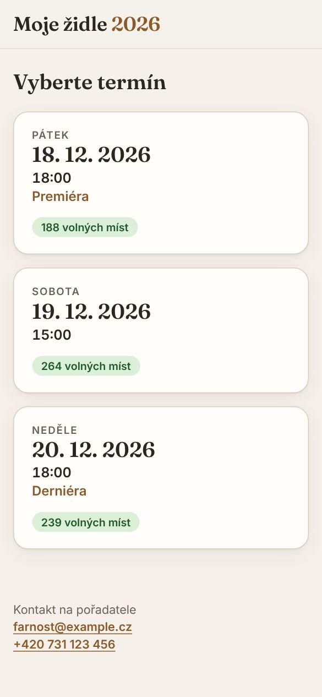
1. Výběr představeníKaždé představení s počtem volných míst. Vyprodaná a uzavřená nejdou vybrat. Dole kontakt na pořadatele.
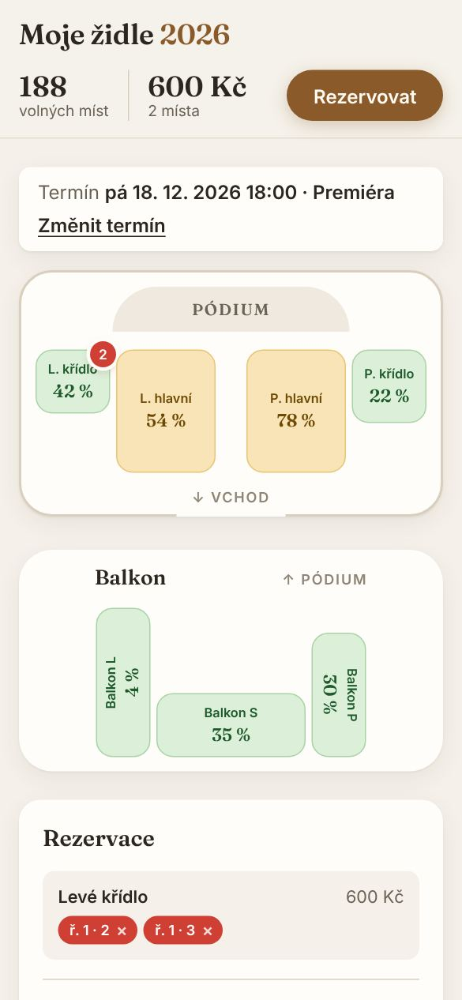
2. Plánek kostelaSekce podle skutečného rozmístění. Barva ukazuje obsazenost, červené číslo vlastní vybraná místa.
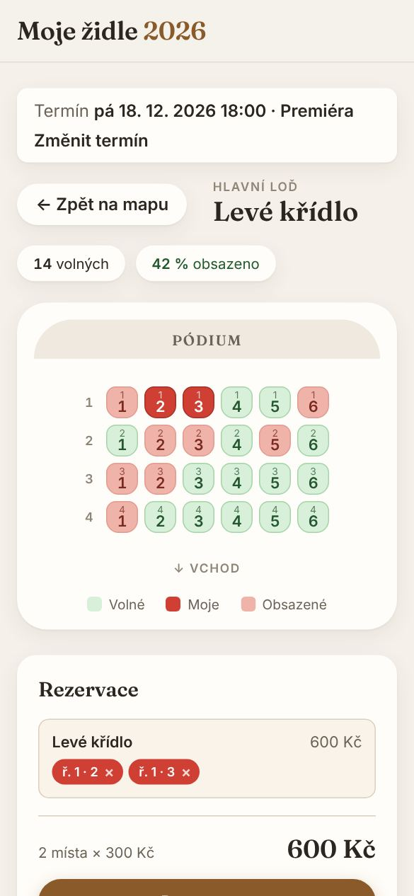
3. Výběr místŘada a číslo na každé židli. Zelená volná, červená vybraná nebo obsazená.
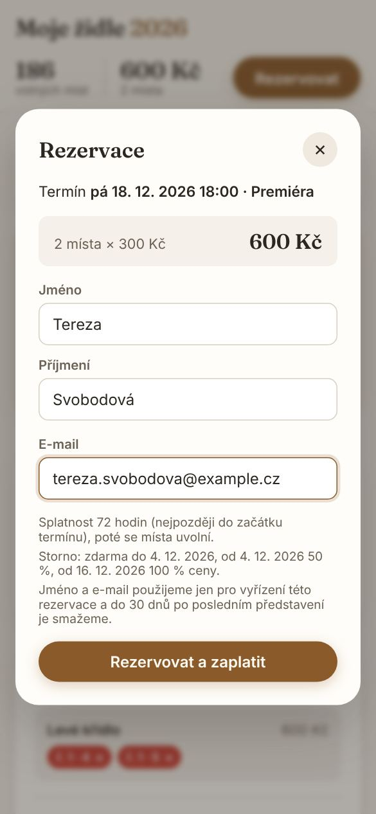
4. RezervaceJméno a e-mail, cena, storno podmínky a informace o ochraně údajů.
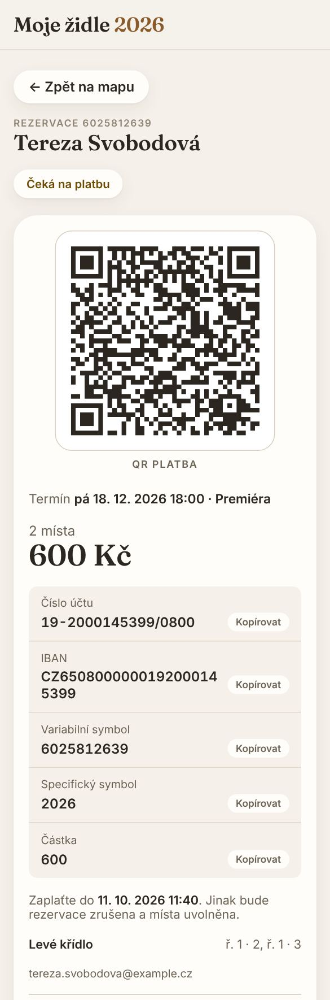
5. PlatbaQR platba a všechny platební údaje ke zkopírování. Stejné údaje přijdou e-mailem.
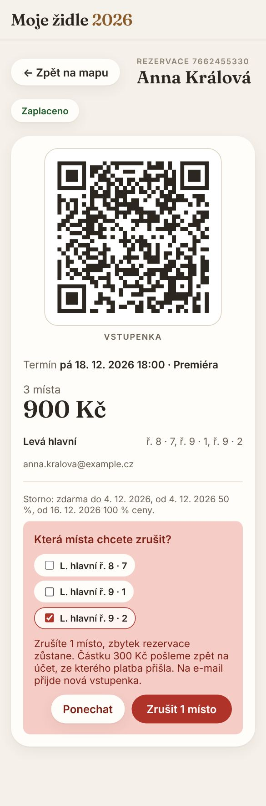
6. Vstupenka a zrušeníPo zaplacení vstupenka. Zde lze zrušit celou rezervaci nebo jen některá místa.
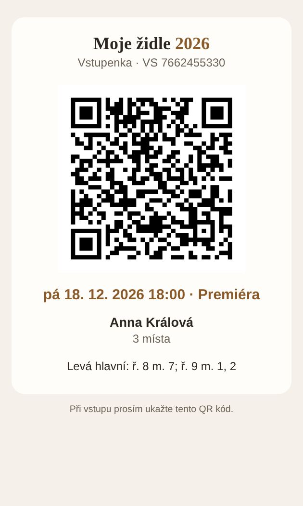
7. Vstupenka e-mailemQR kód, představení, jméno a místa.
Pořadatel u vchodu
mobil · scanner
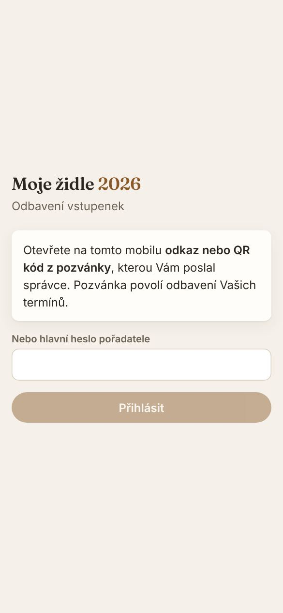
Přihlášení pozvánkouScanner se otevře jen přes odkaz nebo QR kód od správce.
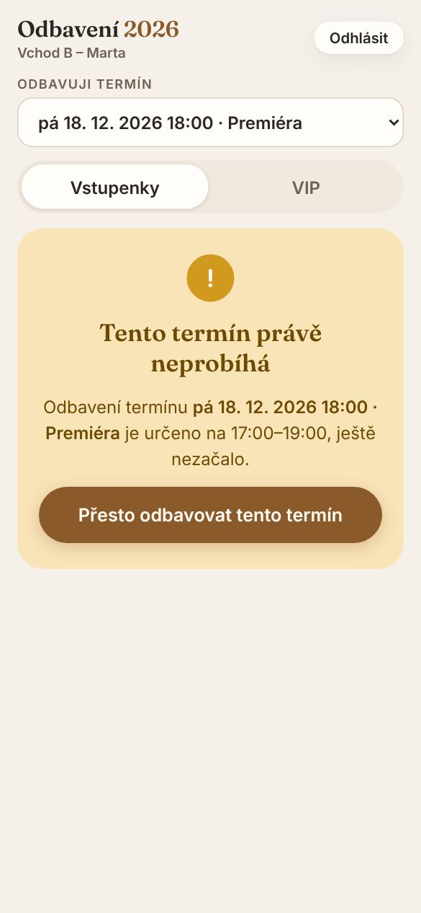
Hlídání časuMimo hodinu před a po začátku představení scanner varuje. Odbavit lze jen po potvrzení.
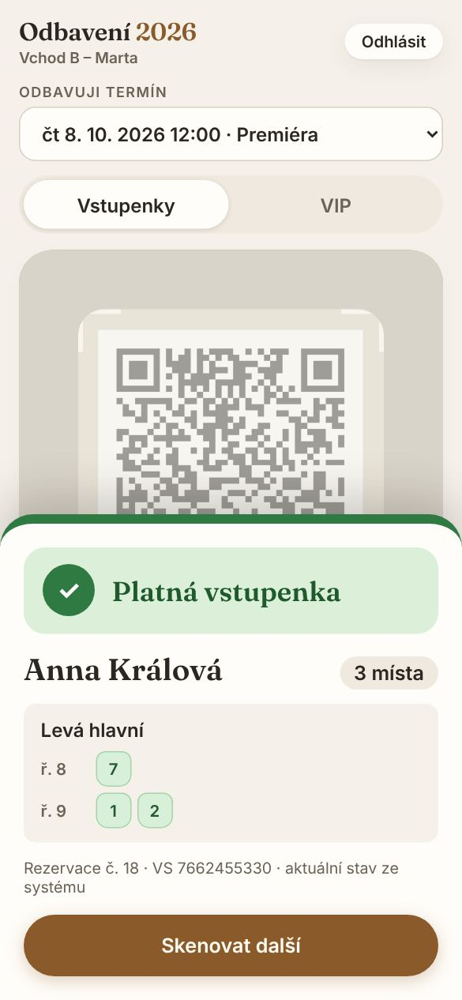
Platná vstupenkaZelená = pustit dál. Ukáže jméno a místa.
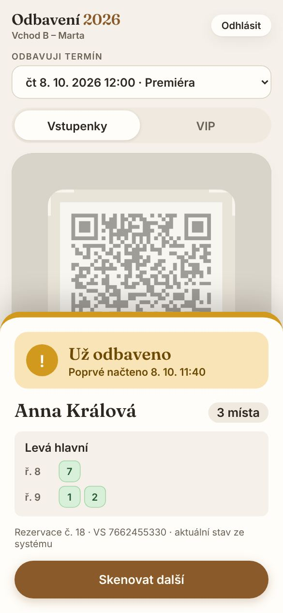
Už odbavenoDruhé načtení stejné vstupenky ukáže, kdy prošla poprvé.
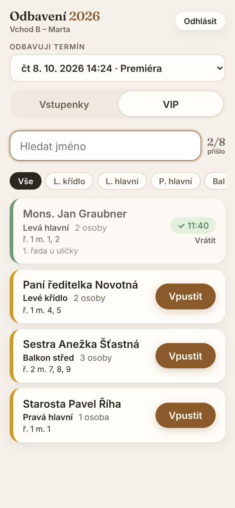
VIP hostéVyhledání podle jména, u každého hosta jeho místa a tlačítko Vpustit.
Účetní / správce
počítač · správa
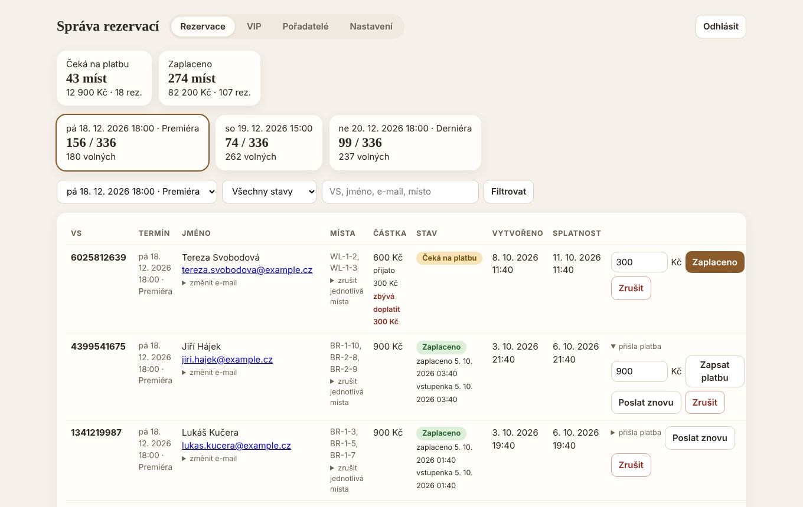
RezervaceObsazenost představení, vyhledávání podle VS nebo jména, zápis přijaté částky, zrušení, vracení peněz.
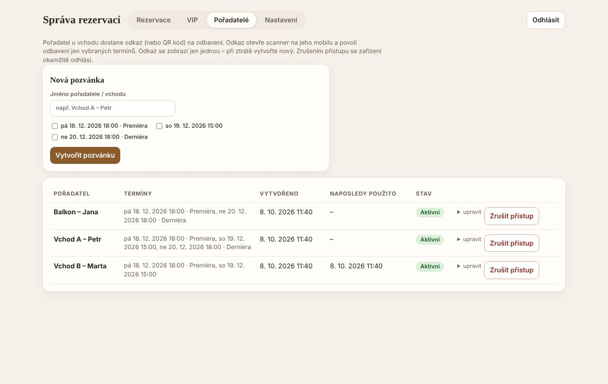
PořadateléPozvánky pro mobily u vchodu, vždy jen na vybraná představení. Přístup lze kdykoli zrušit.
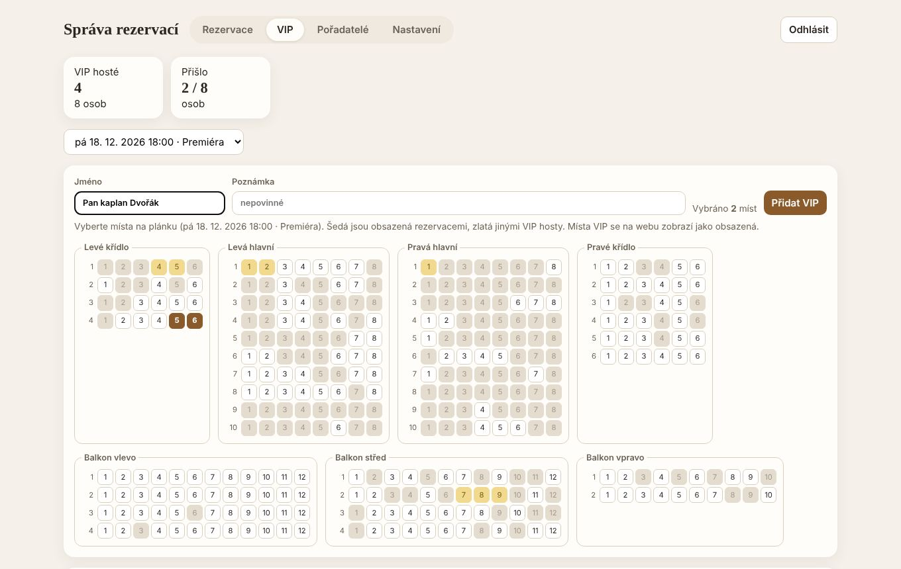
VIP hostéHosté zdarma pro každé představení. Místa se vybírají na plánku – šedá obsadily rezervace, zlatá jiní VIP. Je vidět, kdo už přišel.
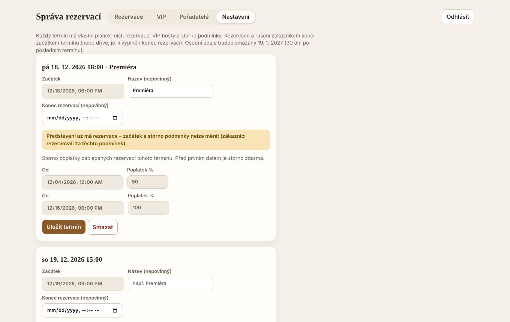
Představení a stornoDatum a čas každého představení a jeho storno poplatky. Po první rezervaci jsou zamčené.
Důležitá pravidla
Kdo nezaplatí, přijde o místa
Na platbu jsou 3 dny (nejpozději do začátku představení). Den předem přijde připomínka. Když platba nedorazí ani 2 dny po splatnosti, místa se uvolní.
Platby potvrzuje člověk
Aplikace není napojená na banku. Účetní páruje platby podle variabilního symbolu a zapíše, kolik skutečně přišlo. Vstupenka proto přijde až po potvrzení.
Málo nebo moc peněz
Když přijde méně, návštěvník dostane e-mail, kolik má doplatit, a vstupenka přijde po doplacení. Přeplatek se vrací na účet, ze kterého platba přišla.
Zrušení a storno
Návštěvník ruší sám přes odkaz z e-mailu, celou rezervaci i jednotlivá místa. Poplatek podle storno podmínek představení, zbytek se do 14 dnů vrátí na účet, ze kterého platba přišla.
Vstupenku nejde padělat
QR kód je elektronicky podepsaný. Pořadatel vždy vidí aktuální stav: zaplaceno, zrušeno nebo už prošel.
Vstupenka platí jen na své představení
Kdo přijde jiný den, scanner ukáže „Jiný termín“ a dotyčného nepustí jako odbaveného.
Odbavení jen v pravý čas
Od hodiny před do hodiny po začátku představení. Jindy scanner varuje, aby se omylem neodbavovalo jiné představení.
Čas a storno podmínky se nemění
Jakmile má představení první rezervaci, nelze už změnit jeho začátek ani storno podmínky – platí to, za co si lidé místa koupili.
Platba, která už nejde použít
Peníze po propadnutí rezervace ji obnoví, pokud představení ještě nezačalo a místa jsou volná. Jinak – a také u zrušené rezervace nebo platby poslané dvakrát – se peníze vrací na účet plátce a návštěvník dostane e-mail.
VIP hosté
Neplatí a nemají vstupenku, ale mají přidělená konkrétní místa – na webu se ukazují jako obsazená. Pořadatel je najde na seznamu podle jména.
Ochrana proti robotům
Formulář chrání neviditelná kontrola – návštěvník nic nevyplňuje ani nevybírá obrázky, prohlížeč se ověří sám na pozadí.
Ochrana osobních údajů
Ukládá se jen jméno a e-mail. 30 dní po posledním představení se automaticky smažou – u rezervací, kde se ještě vrací peníze, až po jejich vrácení.
Co je potřeba před spuštěním
Bankovní účet pro platby a specifický symbol.
Přístup k odesílání e-mailů (SMTP): server, port, e-mailová adresa odesílatele a její heslo.
Kontaktní e-mail a telefon pořadatelů – zobrazí se na webu a v každém e-mailu, odpovědi na e-maily půjdou na tento kontakt.
Data a časy všech představení a jejich storno podmínky – musí být hotové před spuštěním prodeje, po první rezervaci je už nelze změnit.
Seznam VIP hostů pro každé představení a jejich místa.
Jména pořadatelů u vchodu a na která představení přijdou (dostanou pozvánku).
Kdo bude potvrzovat platby a vracet peníze.
Zkušební rezervace „naostro“: rezervace → platba → vstupenka → načtení u vchodu.
Snímky obrazovek ukazují zkušební data – jména a rezervace jsou smyšlené.